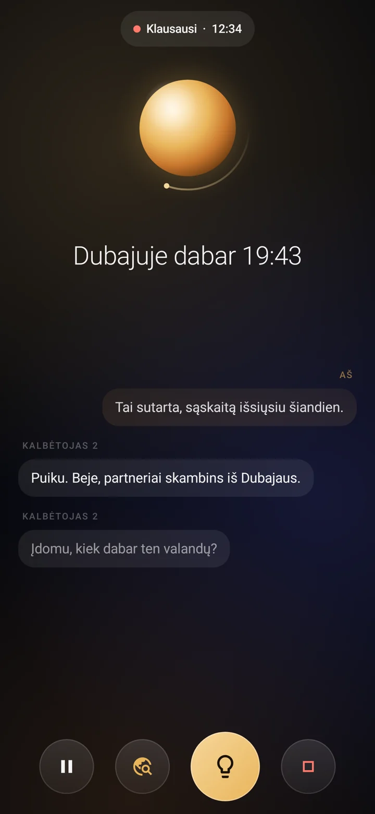
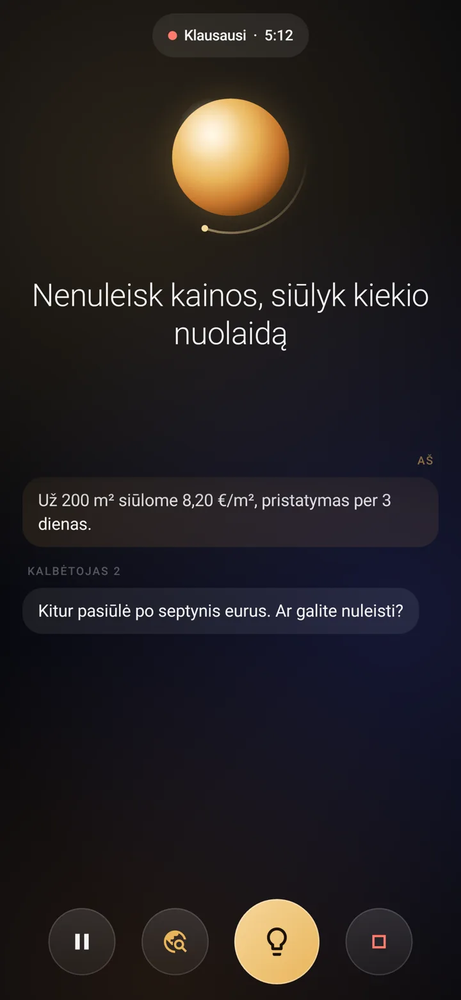
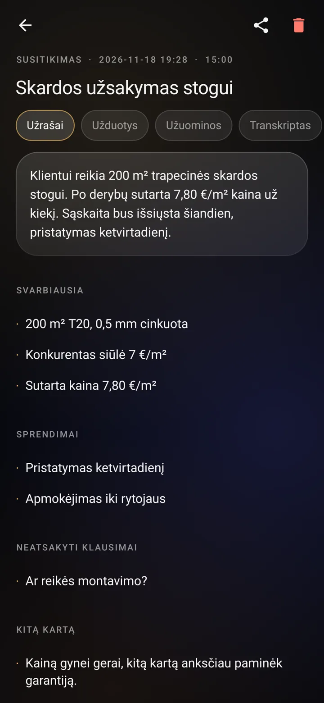

Gyvo pokalbio asistentas
Antras protastavo ausyje.
Enkirai klauso susitikimo, skambučio ar derybų ir per ~1,7 sekundės pašnabžda atsakymą į ausinę. Po pokalbio užrašai ir užduotys jau paruošti.
Netrukus Google Play
Atsakymas ausyje, kol pauzė dar nespėjo tapti nejauki.
Enkirai išgirsta klausimą, nusprendžia, ar verta padėti, ir pašnabžda kelis žodžius į ausinę. Maždaug 1,7 sekundės nuo pradžios iki galo.

Ką Enkirai daro už tave

Susitikimas baigėsi. Užrašai jau paruošti.
Santrauka, sprendimai, neatsakyti klausimai ir užduotys su atsakingais bei terminais, praėjus maždaug dešimčiai sekundžių. Vienu paspaudimu nukopijuoji viską.

5 kalbos
Lietuvių, anglų, lenkų, latvių ir estų, net kai jos maišosi viename pokalbyje.
Privatumas pirmiausia
Transkriptai lieka tavo telefone. Jokių reklamų, jokio duomenų pardavimo. Pasakyk pašnekovams, kad užrašus darai su AI.
Išgirsk pirmas.
Užsirašyk į laukiančiųjų sąrašą. Testeriai gauna ankstyvą prieigą ir metus nemokamai.
Netrukus Google Play